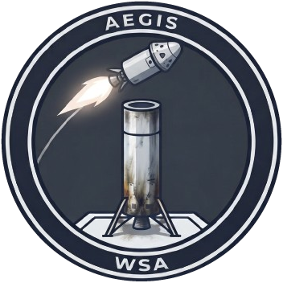

WSA's major vehicle families and aerospace programs.
A searchable registry of WSA vehicles, landers and station hardware. Select a vehicle for its documented details. Unknown values are left out rather than estimated.
Aegis is WSA's reusable booster family and the launcher behind many WSA missions. Guided by WSA AutoLand V2.3, an Aegis booster has now touched down directly on its designated landing pad. The newest design, Aegis Mk1.7, adds a hinge for WSA's future booster catch. The next step is making the landing repeatable and dependable.

Lyra is a newer, larger and more powerful reusable booster family, intended for future high-capacity missions and KGOSS construction. It is in development: no Lyra flight is recorded yet.
WSA builds aircraft and spaceplanes to try out flight-control ideas, high-speed flight and reusable transport to orbit. Many of the designs below are still undocumented.